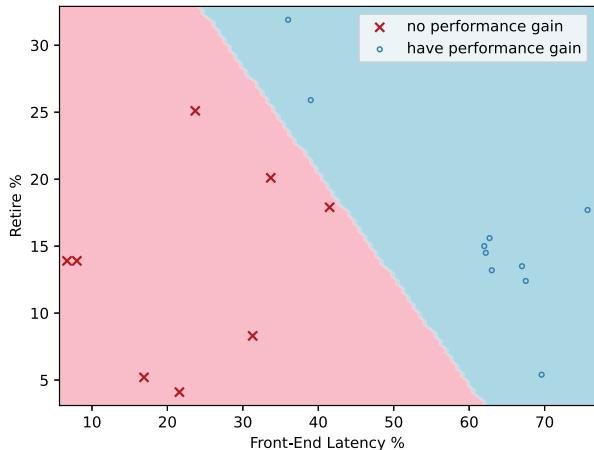
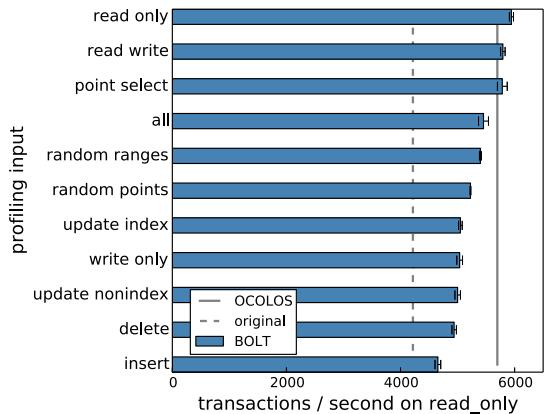
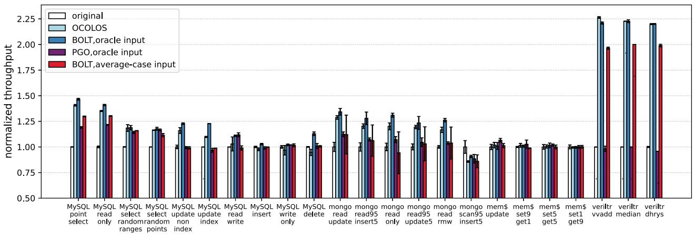
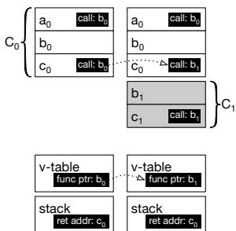

OCOLOS: Online COde Layout OptimizationS 论文解析¶
0. 论文基本信息¶
作者 (Authors)
- Yuxuan Zhang (University of Pennsylvania)
- Tanvir Ahmed Khan (University of Michigan)
- Gilles Pokam (Intel Corporation)
- Baris Kasikci (University of Michigan)
- Heiner Litz (University of California, Santa Cruz)
- Joseph Devietti (University of Pennsylvania)
发表期刊/会议 (Journal/Conference)
- 该论文未在提供的文本中明确指出其发表的期刊或会议名称。
发表年份 (Publication Year)
- 该论文未在提供的文本中明确指出其发表年份。
1. 摘要¶
目的
- 解决传统 Profile-Guided Optimization (PGO) 在 unmanaged languages（如 C/C++）中面临的三大核心挑战：
- Profile 滞后性：离线收集的 profile 数据可能与当前程序的实际输入或行为不匹配，导致优化效果不佳甚至有害。
- 代码变更映射困难：应用程序频繁更新后，旧版本的 profile 数据难以准确映射到新版本的代码上，造成优化机会丢失。
- 运维负担：管理和部署 profile 数据增加了系统复杂性。
方法
- 提出 OCOLOS，首个面向 unmanaged code 的 online PGO 系统，其核心思想是在程序运行时动态进行代码布局优化。
- 核心设计原则：
- 保留原始代码地址 (preserve addresses of C0 instructions)：通过将优化后的新代码 C1 注入到新的内存地址，同时保留原始代码 C0，避免因代码移动而破坏无法追踪的代码指针（如栈上的返回地址、
setjmp/longjmp保存的地址等）。 - 在常见路径上运行优化代码 (run C1 code in the common case)：通过更新可追踪的代码指针（如 v-table 中的函数指针、直接调用指令），将执行流引导至性能更优的 C1 代码。
- 固定成本模型 (fixed-costs only)：确保优化过程只产生一次性的开销，避免持续的运行时性能损耗。
- 保留原始代码地址 (preserve addresses of C0 instructions)：通过将优化后的新代码 C1 注入到新的内存地址，同时保留原始代码 C0，避免因代码移动而破坏无法追踪的代码指针（如栈上的返回地址、
- 关键技术实现：
- 利用 BOLT 作为后端优化引擎，对运行中的程序进行 hardware performance profiling（通过 Linux
perf和 Intel LBR）。 - 使用 ptrace API 暂停目标进程，并通过 LD_PRELOAD 注入的库高效地将 BOLT 生成的优化代码 C1 复制到目标进程地址空间。
- 为支持 continuous optimization，引入了针对 return addresses 和 function pointers 的特殊处理机制，并通过一个简单的 LLVM compiler pass 在函数指针创建时进行拦截和重定向，确保所有动态创建的函数指针都指向原始代码 C0。
- 针对短时任务（如软件构建），设计了 BATCH ACCELERATOR MODE (BAM) 模式，通过透明地替换后续
exec调用的二进制文件来应用优化，完全规避了运行时暂停的开销。
- 利用 BOLT 作为后端优化引擎，对运行中的程序进行 hardware performance profiling（通过 Linux
结果
- 性能提升显著：在多个真实世界的大规模应用上验证了 OCOLOS 的有效性。
- MySQL 性能最高提升 1.41×。
- Verilator 硬件模拟器性能最高提升 2.20×。
- Clang 编译器构建任务通过 BAM 模式加速 1.14×。
- 与离线 PGO 对比：OCOLOS 的性能非常接近使用“神谕”（oracle）profile 的离线 BOLT（平均仅慢 4.6%），但远优于使用聚合平均 profile 的离线 BOLT（平均快 8.9%）。
- 开销可控：
- 内存开销：适度，例如 MongoDB 仅增加约 208 MiB。
- 暂停时间：代码替换阶段需要短暂的“stop-the-world”暂停，例如 MySQL 为 669 毫秒。
- 恢复时间：以 MySQL 为例，在完成优化后约 30 秒 即可弥补优化过程中的性能损失，此后均为净收益。
- 微架构层面影响：OCOLOS 成功减少了 L1i misses、iTLB misses 和 taken branches 的数量，有效缓解了处理器前端瓶颈。

Fig. 8: Microarchitectural events (per 1,000 instructions) for MySQL inputs
- 适用性分析：通过 Intel TopDown 方法学发现，Front-End Latency 高而 Retiring 低的工作负载最能从 OCOLOS 中受益。

Fig. 9: TopDown’s [109] Front-end Latency and Retire percentages allow us to accurately classify which workloads will benefit from OCOLOS and which won’t.
结论
- OCOLOS 成功地将 online PGO 的优势带给了 unmanaged languages，克服了传统离线 PGO 的 profile 滞后和映射难题。
- 通过创新的 代码共存 和 指针重定向 策略，OCOLOS 能够在无需修改应用源码的前提下，安全、高效地对复杂的多线程应用（如 MySQL, MongoDB）进行在线代码替换。
- 其 固定成本模型 和针对批处理场景的 BAM 模式，使其在数据中心等环境中具有很高的实用价值和部署潜力。
2. 背景知识与核心贡献¶
研究背景与动机
- 现代数据中心应用的代码足迹（code footprint）持续增长（如 Google 报告年增 30%），而处理器前端（front-end）硬件资源（如 L1 指令缓存 L1i）在过去 15 年中容量基本保持不变，导致严重的前端瓶颈（front-end stalls），降低了 IPC（Instructions Per Cycle）。
- Profile-Guided Optimizations (PGO) 是一种有效的解决方案，它通过重排代码来优化指令缓存局部性和分支预测效率。然而，现有的 PGO 系统（如 BOLT, AutoFDO）都是离线（offline）的，面临三大核心挑战：
- 配置文件过时（Stale Profiles）：离线 PGO 的配置文件收集与应用之间存在时间差，若程序输入或行为发生变化，旧的配置文件会变得不相关甚至有害。
- 代码变更映射困难（Mapping Across Code Changes）：当应用程序频繁更新时，为旧版本收集的配置文件难以准确映射到新版本的机器码上，导致大量优化机会被浪费。
- 运维负担（Operational Burden）：管理和部署配置文件增加了系统复杂性，尤其在移动端等场景下。

Fig. 1: AMD & Intel per-core L1i capacity over time
- 虽然托管语言（managed languages）运行时（如 JVM）支持在线 PGO，但针对 C/C++ 等非托管语言（unmanaged languages）的在线 PGO 系统尚属空白。
核心贡献
- 提出了 OCOLOS (Online COde Layout OptimizationS)，这是首个面向非托管语言的在线代码布局优化系统。OCOLOS 能够在不修改应用程序源码的前提下，对正在运行的进程进行动态代码优化。
- 设计并实现了高效、安全的在线代码替换机制，解决了在复杂多线程应用（如 MySQL, MongoDB）中动态修改代码所带来的代码指针（code pointers）难题。其核心设计原则包括：
- 保留原始代码地址（preserve addresses of C0 instructions）：通过注入新代码（C1）而非原地修改，并将执行流重定向到新代码，确保正确性。
- 在常见情况下运行优化代码（run C1 code in the common case）：通过更新 v-table 和直接调用点等关键指针，最大化性能收益。
- 仅产生一次性开销（fixed costs only）：避免引入持续性的运行时开销。
- 提出了 BATCH ACCELERATOR MODE (BAM)，一种针对短生命周期进程批处理工作负载（如软件构建）的变体。BAM 通过透明地拦截
exec调用，在后台生成优化二进制文件，并在后续进程中自动使用，从而加速整个批处理任务。 - 通过实验验证了 OCOLOS 的有效性，在多个真实世界的大规模应用上取得了显著性能提升：
- MySQL 加速最高达 1.41×
- Verilator 硬件模拟器加速最高达 2.20×
- Clang 编译器构建（通过 BAM）加速最高达 1.14×

Fig. 3: Performance achieved when running MySQL with the Sysbench read only input, using BOLT to produce a binary from the given profiling input or, with the all bar, from profiles of all inputs combined.

Fig. 5: Performance of OCOLOS (light blue bars) compared to BOLT using an oracle profile of the input being run (dark blue bars), Clang PGO using the same oracle profile (purple bars) and BOLT using an average-case profiling input aggregated from all inputs (pink bars). All bars are normalized to original non-PGO binaries (white bars).
3. 核心技术和实现细节¶
0. 技术架构概览¶
整体技术架构
OCOLOS 的核心目标是为 unmanaged languages（如 C/C++）实现 online Profile-Guided Optimization (PGO)，通过在运行时动态优化代码布局来解决处理器 front-end bottleneck 问题。其架构巧妙地结合了成熟的离线工具与创新的在线代码替换机制。
-
基础依赖：
- BOLT (Binary Optimization and Layout Tool)：作为后端优化引擎，负责根据性能剖析数据对二进制文件进行 basic block reordering 和 function reordering 等布局优化。
- Linux perf：利用硬件性能计数器（特别是 Intel LBR）在运行时收集低开销的控制流剖析数据。
-
核心工作流程：
- 后台剖析与优化：系统首先对目标进程进行剖析。若检测到显著的 front-end stalls，则启动第二阶段剖析以收集详细的 LBR 样本。这些样本被送入 BOLT 以生成一个全新的、优化后的二进制文件。此过程在后台并发执行，不影响主程序运行。
- 在线代码注入与替换：一旦优化后的二进制文件准备就绪，OCOLOS 会暂停目标进程（stop-the-world 阶段），将新代码（称为 C1）注入到进程的地址空间中，同时保留原始代码（C0）不变。
- 指针重定向：OCOLOS 更新关键的 code pointers（如 v-table 中的函数指针和 C0 中的直接调用指令），将执行流引导至性能更高的 C1 代码。它遵循“run C1 code in the common case”的设计原则，确保绝大多数执行路径都能受益于优化。
- 恢复执行：完成代码注入和指针更新后，目标进程被恢复，以优化后的代码继续运行。

Figure 4a: Main steps OCOLOS takes to optimize a target process
-
关键技术设计原则：
- Preserve addresses of C0 instructions：通过保留原始代码 C0，避免了因代码移动而导致的无法追踪的指针失效问题，极大地简化了在线替换的复杂性，并能正确处理 setjmp/longjmp 等棘手场景。
- Fixed-costs only：系统只在代码替换时产生一次性的开销（如暂停进程、内存拷贝），之后程序以原生性能运行，避免了传统 Dynamic Binary Instrumentation (DBI) 框架（如 Pin, Valgrind）带来的持续性性能损耗。
- Function pointer handling：通过一个轻量级的 LLVM compiler pass，在编译时插入一个
wrapFuncPtrCreation回调函数，强制所有新创建的函数指针都指向 C0 中的原始地址。这保证了即使在代码替换后，通过函数指针的调用也能安全地进入 C0，并很快通过已更新的直接调用跳转到 C1。
-
扩展模式：BATCH ACCELERATOR MODE (BAM)：
- 针对 short-running programs（如编译器），OCOLOS 的一次性开销难以被摊销。为此，OCOLOS 提供了 BAM 模式。
- BAM 通过 LD_PRELOAD 透明地拦截对目标二进制文件的 exec* 调用。
- 它对前几次执行进行剖析，然后在后台使用 BOLT 生成优化版本。
- 后续的所有 exec* 调用都会被重定向到这个优化后的二进制文件，从而加速整个批处理任务（如软件构建）。

Fig. 10: The running time of a Clang build with the original compiler, and compilers optimized by BOLT and BAM.
1. 在线代码布局优化 (Online Code Layout Optimization)¶
核心观点
OCOLOS 的核心在于将传统的离线 Profile-Guided Optimization (PGO) 迁移到运行时，通过动态替换正在执行进程的代码来实现持续优化。其关键挑战是如何在不破坏程序正确性的前提下，安全地更新遍布进程地址空间的各类 code pointers。
- OCOLOS 并非从零开始构建优化器，而是巧妙地复用并扩展了成熟的离线 PGO 工具 BOLT。
- 其工作流程分为两大阶段：后台异步准备（剖析与优化）和 前台同步替换（代码注入与指针更新）。
- 为解决运行时代码替换的难题，OCOLOS 提出了三项核心设计原则：
- Design Principle #1: preserve addresses of C0 instructions：保留原始代码
C0的地址不变，将优化后的新代码C1注入到新的内存区域。 - Design Principle #2: run C1 code in the common case：尽可能将执行流引导至性能更优的
C1代码，仅在必要时回退到C0以保证正确性。 - Design Principle #3: code replacement can incur fixed costs, but must avoid all possible recurring costs：代码替换可以有一次性开销，但必须避免任何持续性的性能损耗。
- Design Principle #1: preserve addresses of C0 instructions：保留原始代码
算法流程与实现细节
OCOLOS 的完整在线优化流程如图所示，包含六个主要步骤。
Figure 4a: Main steps OCOLOS takes to optimize a target process
-
步骤 1 & 2: 后台剖析与 BOLT 优化 (异步):
- 输入: 正在运行的目标进程。
- 剖析: 使用 Linux
perf工具，首先通过 TopDown 方法判断是否存在严重的 front-end stalls。若存在，则启用 Intel LBR (Last Branch Record) 机制收集热点控制流路径。 - 优化: 将收集到的 LBR 剖析数据和原始二进制文件作为输入，调用 BOLT 生成一个全新的、经过代码布局优化的二进制文件。此过程在后台进行，不影响主进程的正常执行。
-
步骤 3-6: 在线代码替换 (同步):
- 暂停进程: 使用 Linux ptrace API 暂停目标进程的所有线程，进入“stop-the-world”状态。
- 注入代码: 通过 LD_PRELOAD 机制预先注入的库，在目标进程内部高效地将 BOLT 生成的优化代码 (
C1) 复制到其地址空间中，同时保留原始代码 (C0)。 - 更新指针: 这是最关键的一步。OCOLOS 会更新以下几类指针以引导执行流至
C1:- 直接调用 (Direct calls): 修补
C0中对热点函数的直接调用指令，使其跳转到C1中的对应函数。 - 虚表 (v-tables): 更新全局或堆上的虚表，使其函数指针指向
C1中的实现。 - 栈上返回地址: 对于正处于调用栈上的函数，OCOLOS 会将其在
C0中的代码原样复制一份到C1区域（记为bi,i+1），并精确计算和更新栈上的返回地址，确保函数能正确返回。
- 直接调用 (Direct calls): 修补
- 恢复进程: 完成所有修补后，恢复所有线程的执行。
处理连续优化与函数指针
为了支持根据程序行为变化进行多次优化（即 C0 -> C1 -> C2 ...），OCOLOS 引入了垃圾回收机制来清理不再需要的旧代码版本，并通过一种巧妙的方法处理难以追踪的函数指针。
- 函数指针创建拦截:
- OCOLOS 要求应用程序在编译时应用一个简单的 LLVM compiler pass。
- 该 Pass 会在所有函数指针创建点插入一个回调函数
wrapFuncPtrCreation。 - 无论程序何时创建一个指向
Ci(i>0) 的函数指针，该回调都会将其透明地重定向为指向原始C0中的对应函数。 - 这样，所有在程序中自由传播的函数指针都只指向
C0，而C0中的代码又会被修补以调用Ci，从而在保证安全性的同时，将绝大多数执行流导向最新的优化代码。
BATCH ACCELERATOR MODE (BAM)
对于大量短生命周期进程的批处理工作负载（如软件构建），OCOLOS 的一次性替换开销无法被有效摊销。为此，论文提出了 BAM 模式。
- 工作原理:
- BAM 作为一个 LD_PRELOAD 库，透明地拦截对目标二进制文件（如
clang）的exec*调用。 - 它对前 N 次执行进行剖析，并在后台使用 BOLT 生成优化版本。
- 一旦优化二进制就绪，后续所有的
exec*调用都会被重写，直接启动这个优化后的版本。
- BAM 作为一个 LD_PRELOAD 库，透明地拦截对目标二进制文件（如
- 优势: 完全无需修改构建脚本或源代码，即可加速整个构建过程。实验表明，BAM 能将 Clang 的完整构建速度提升 1.14×。
性能评估与局限性
OCOLOS 在多个真实世界应用上展示了显著的性能提升。
| Benchmark (Input) | OCOLOS Speedup | BOLT Oracle Speedup |
|---|---|---|
| MySQL (read only) | 1.41× | 1.48× |
| Verilator (dhrystone) | 2.20× | 2.21× |
| MongoDB (read update) | 1.29× | 1.33× |
| Clang Build (BAM) | 1.14× | 1.16× |
- 核心收益来源: 如图所示，OCOLOS 显著降低了 L1i MPKI (每千条指令的 L1 指令缓存缺失数)、iTLB MPKI 和 taken branches 的数量，有效缓解了处理器前端瓶颈。
Fig. 8: Microarchitectural events (per 1,000 instructions) for MySQL inputs
- 当前局限性:
- 不支持 jump tables: 需要使用
-fno-jump-tables编译标志。 - 替换暂停时间: 代码替换期间进程完全暂停，可能影响尾部延迟。论文中 MySQL 的暂停时间为 669ms。
- BOLT 限制: 当前版本的 BOLT 无法对已经 BOLT 优化过的二进制文件再次优化，这阻碍了对 continuous optimization 的完整评估。
- 不支持 jump tables: 需要使用
2. 安全的在线代码替换机制 (Safe Online Code Replacement)¶
OCOLOS 的核心创新在于其实现了针对 unmanaged languages（如 C/C++）的 安全在线代码替换机制。该机制巧妙地规避了在运行时修改代码所带来的指针失效风险，其设计围绕三个核心原则展开。
设计原则与实现原理
-
Design Principle #1: preserve addresses of C0 instructions (保留原始代码 C0 的指令地址)。
- OCOLOS 不会直接覆写原始代码段（称为 C0）。
- 相反，它会将经过 BOLT 优化后的新代码（称为 C1）注入到进程地址空间的一个新位置。
- 原始代码 C0 被完整保留，这确保了任何指向 C0 的、无法被追踪或更新的指针（例如通过
setjmp/longjmp保存的指令指针、或被混淆的函数指针）依然有效，从而保证了程序的正确性。
-
Design Principle #2: run C1 code in the common case (在常见情况下执行 C1 代码)。
- 为了获得性能收益，OCOLOS 需要将执行流尽可能多地引导至优化后的 C1 代码。
- 它通过有选择地更新关键且可追踪的代码指针来实现这一目标，主要包括：
- 虚表 (v-table) 中的函数指针。
- 直接调用 (direct calls) 指令的目标地址。
- 这种策略接受一个权衡：少数情况下（例如通过未被更新的旧函数指针调用），程序仍会执行 C0 代码，但这部分开销很小，并且一旦进入 C0，后续的直接调用或虚函数调用通常会再次跳转回 C1。
-
Design Principle #3: code replacement can incur fixed costs, but must avoid all possible recurring costs (代码替换可以产生一次性开销，但必须避免所有可能的持续性开销)。
- OCOLOS 的设计避免了像传统 Dynamic Binary Instrumentation (DBI) 框架（如 Pin, DynamoRIO）那样的持续性性能损耗。
- 其主要开销发生在代码替换的短暂“stop-the-world”阶段，之后程序以接近原生的速度运行在 C1 上。

Figure 4b: Starting state of the address space (left) and state after code replacement (right)
算法流程与关键技术
OCOLOS 的在线代码替换流程如图所示，主要包含以下步骤：
-
后台准备:
- 在目标进程运行的同时，OCOLOS 在后台使用 Linux perf 工具收集 LBR (Last Branch Record) 性能剖析数据。
- 利用收集到的 LBR 数据和原始二进制文件，调用 BOLT 工具生成一个全新的、经过优化的二进制文件（即 C1 的来源）。
-
暂停目标进程:
- 当优化后的二进制文件准备好后，OCOLOS 使用 ptrace API 暂停目标进程的所有线程，进入“stop-the-world”阶段。
-
注入新代码 (C1):
- OCOLOS 通过 LD_PRELOAD 注入的库，在目标进程内部高效地将 C1 代码从优化后的二进制文件中复制到其地址空间的新区域。
-
更新关键指针:
- 直接调用修补: OCOLOS 在离线阶段已解析出原始二进制中所有直接调用指令的位置。在此阶段，它将这些调用的目标地址从 C0 中的函数更新为 C1 中对应的函数。
- 虚表修补: OCOLOS 扫描进程内存（或利用已知的虚表布局），定位并更新所有指向 C0 函数的虚表条目，使其指向 C1 中的对应函数。
-
恢复执行:
- 完成代码注入和指针更新后，OCOLOS 恢复所有线程的执行。此后，绝大多数执行流将通过更新后的直接调用和虚表进入高性能的 C1 代码。
处理连续优化与函数指针
为了支持 Continuous Optimization（持续优化），即从 C1 升级到 C2，OCOLOS 引入了额外的机制来处理栈上活跃的函数和动态创建的函数指针。
-
栈上函数处理:
- 如果一个正在 C1 中执行的函数（例如
b1）需要被替换为 C2，OCOLOS 无法简单地让其返回到 C2 中的b2，因为b2的指令布局可能已完全不同。 - 解决方案是，在 C2 中为该栈上函数创建一个 精确副本（例如
b1,2），并修正其内部的 PC-relative addressing。 - 同时，OCOLOS 会遍历每个线程的栈（使用 libunwind），找到返回地址，并将其重定向到
b1,2中的对应位置，确保函数能正确返回。
- 如果一个正在 C1 中执行的函数（例如
-
函数指针创建拦截:
- 为了避免程序在运行时创建指向 C1/C2 等中间版本代码的函数指针（这些指针在下一次代码替换时会失效），OCOLOS 强制规定：所有动态创建的函数指针必须指向原始的 C0 地址。
- 它通过一个简单的 LLVM compiler pass 来实现，在每个函数指针创建点插入一个回调函数
wrapFuncPtrCreation。 - 该回调函数维护一个从 Ci 到 C0 的地址映射，将任何对 Ci 函数的引用自动转换为对 C0 函数的引用。由于函数指针创建是一个相对低频的操作（例如 MySQL 中每毫秒仅约 45 次），此机制的运行时开销可以忽略不计。

Figure 4c: Before (left) and after (right) continuous optimization
输入输出关系及整体作用
-
输入:
- 一个正在运行的、未经优化的目标进程。
- 由 perf 收集的、针对该进程当前行为的 LBR profiling data。
- 原始的二进制可执行文件。
-
输出:
- 同一个进程，但其热代码路径已被替换为经过 BOLT 优化的 C1 代码。
- 进程继续运行，性能得到提升，且无需重启。
-
在整体中的作用:
- 该机制是 OCOLOS 实现 Online Profile-Guided Optimization (PGO) 的基石。它解决了传统离线 PGO 的两大痛点：profile staleness（剖析数据过时）和 binary mapping（剖析数据与新版本二进制难以映射）。
- 通过安全地在运行时替换代码，OCOLOS 确保了剖析数据始终与当前执行的代码完美匹配，从而能够持续地为应用程序提供最优的代码布局，最大化 L1i 和 branch predictor 的效率。
3. 函数指针创建拦截 (Function Pointer Creation Interception)¶
实现原理与核心目标
OCOLOS 的连续优化机制会生成多个代码版本（C0, C1, C2, ...），并最终回收不再需要的旧版本（如 Ci）。这带来一个严峻挑战：如果程序在运行时创建了指向中间版本 Ci 的函数指针，当 Ci 被回收后，这些悬空指针将导致程序崩溃。为解决此问题，OCOLOS 引入了一种巧妙的设计，其核心目标是强制所有动态创建的函数指针都指向原始、永不被回收的 C0 代码。
- 根本策略：通过一个 LLVM compiler pass，在编译阶段对所有函数指针的创建点进行静态分析和插桩。
- 运行时重定向：在程序运行时，每当创建一个新的函数指针，该插桩代码会调用一个名为
wrapFuncPtrCreation的回调函数。 - 地址映射：
wrapFuncPtrCreation函数内部维护了一个从优化代码版本（Ci）到原始代码版本（C0）的地址映射表。它接收一个可能指向 Ci 的函数指针作为输入，并返回其在 C0 中的对应地址。 - 语义一致性：由于 C0 和 Ci 中的对应函数在功能上是等价的（仅布局不同），将函数指针重定向到 C0 不会破坏程序逻辑，但能确保指针的长期有效性。
算法流程与参数设置
该机制的完整流程贯穿编译时和运行时两个阶段。
-
编译时 (Offline)
- OCOLOS 的 LLVM Pass 扫描整个程序的 IR 或 MIR。
- 它识别出所有可能产生函数指针的指令或表达式（例如，取函数地址
&func的操作）。 - 在这些位置插入对
wrapFuncPtrCreation函数的调用，将原始的函数地址作为参数传入。 - 此过程无需任何用户干预或源代码修改，完全自动化。
-
运行时 (Online)
- 程序启动后，
wrapFuncPtrCreation函数被初始化，其内部的地址映射表为空。 - 当执行流到达一个被插桩的函数指针创建点时，会调用
wrapFuncPtrCreation(original_ptr)。 - 判断逻辑：
- 如果
original_ptr指向的是 C0 代码、库函数或尚未被 OCOLOS 优化的代码，则wrapFuncPtrCreation直接返回original_ptr（即充当identity function）。 - 如果
original_ptr指向的是某个已被 OCOLOS 优化的 Ci 版本，则函数查询其内部映射表，找到对应的 C0 地址并返回。
- 如果
- 程序接收到的函数指针值始终是安全的 C0 地址，后续可以在寄存器、栈或堆中自由传播，而无需任何额外的追踪开销。
- 程序启动后，
输入输出关系及在整体架构中的作用
该机制的输入输出关系清晰，并在 OCOLOS 的整体设计中扮演着至关重要的角色。
- 输入：一个原始的、可能指向任意代码版本（C0, C1, ..., Ci）的函数指针地址。
- 输出：一个经过重定向的、保证指向 C0 的函数指针地址。
- 性能开销：论文指出此插桩的开销negligible（可忽略不计）。以 MySQL 为例，平均每毫秒仅创建约 45 个函数指针，因此回调函数的调用频率极低。
在 OCOLOS 整体架构中的作用
- 保障连续优化的安全性：这是实现安全垃圾回收（回收 Ci 代码）的前提。通过消除指向 Ci 的“外部”引用，OCOLOS 可以确信一旦内部指针（如 v-table、直接调用）被更新，Ci 代码就真正变成了dead code，可以被安全覆盖。
- 维持“固定成本”模型：该设计完美契合了 OCOLOS 的 Design Principle #3：“code replacement can incur fixed costs, but must avoid all possible recurring costs”。插桩只在指针创建时发生一次，之后指针的使用没有任何额外开销，避免了像传统 DBI 框架那样的持续性性能损耗。
- 简化指针管理：它将一个极其复杂的动态指针追踪问题，转化为了一个简单的、一次性的地址翻译问题，极大地降低了在线代码替换的工程复杂度。
Figure 4c: Before (left) and after (right) continuous optimization
4. 批处理加速模式 (Batch Accelerator Mode, BAM)¶
BAM 的核心目标与设计动机
- 解决 OCOLOS 主模式的局限性：OCOLOS 的在线代码替换机制存在一个固定的“一次性”开销（包括剖析、运行 BOLT、暂停进程、注入代码）。对于短时进程 (short-running programs)，这个开销无法被其短暂的运行时间所摊销，导致净收益为负。
- 针对特定工作负载：BAM 专门优化批处理工作负载 (batch workloads)，这类负载的特点是会反复调用同一个二进制文件多次，典型的例子就是大型软件项目（如 Clang）的构建过程，其中包含成千上万次的编译器调用。
- 继承 OCOLOS 的核心优势：与主模式一样，BAM 旨在避免离线 PGO 的痛点，即剖析数据过时、剖析数据与新版本代码映射困难以及剖析数据管理的运维负担。
BAM 的实现原理与算法流程
BAM 的实现完全基于 Linux 的 LD_PRELOAD 机制，使其对应用程序完全透明，无需任何代码或构建脚本修改。
-
部署方式：
- 用户通过
LD_PRELOAD=bam.so启动顶层命令（例如make）。 - BAM 库 (
bam.so) 会被加载到该进程及其所有子进程中。
- 用户通过
-
核心拦截与剖析阶段：
- BAM 透明拦截 (transparent interception) 对 libc 中
exec*系列函数的调用。 - 当检测到对目标二进制文件（通过配置文件指定，例如
clang）的exec调用时，BAM 会动态修改exec的参数。 - 修改后的参数会自动启用硬件性能剖析（通过
perf），从而在目标二进制文件执行时收集 LBR (Last Branch Record) 剖析数据。 - 这个过程对早期的几次运行是透明的，它们会正常执行，但同时为后续优化收集数据。
- BAM 透明拦截 (transparent interception) 对 libc 中
-
优化二进制生成阶段：
- BAM 在后台持续收集剖析数据。
- 当收集到预设数量的剖析样本后（这是一个可配置的参数），BAM 会在后台启动一个独立进程来执行 BOLT 优化流程。
- 该流程与标准 BOLT 相同：使用
perf2bolt处理 LBR 数据，并用 BOLT 生成一个新的、优化后的二进制文件（例如clang.bolt）。
-
无缝切换与加速阶段：
- 一旦优化后的二进制文件生成完毕，BAM 会动态重写后续的
exec调用。 - 所有后续对原始目标二进制文件（
clang）的调用，都会被重定向到执行优化后的版本（clang.bolt）。 - 从这一刻起，批处理工作负载的剩余部分就能享受到原生的、无任何运行时开销的性能提升。
- 一旦优化后的二进制文件生成完毕，BAM 会动态重写后续的
关键参数与配置
- 目标二进制文件：通过一个外部配置文件指定需要优化的二进制文件路径。
- 剖析样本数量阈值：一个可配置的参数，决定了 BAM 需要观察多少次目标二进制的执行后才触发 BOLT 优化。这个参数是性能权衡的关键：
- 阈值过低：剖析数据不足，生成的优化二进制效果不佳。
- 阈值过高：等待剖析和优化的时间过长，错过了用优化版本加速更多任务的机会。
- 论文实验表明，对于 Clang 构建，仅需剖析 5 次左右的编译器调用就能获得接近最佳的加速效果，之后收益递减。
输入输出关系及在整体架构中的作用
- 输入：
- 一个会反复执行同一二进制文件的批处理命令（如
make -j）。 - 一个指定目标优化二进制的配置文件。
- 一个会反复执行同一二进制文件的批处理命令（如
- 输出：
- 一个透明加速的批处理过程，用户感知不到任何变化。
- 一个临时的、优化后的二进制文件（由 BAM 在后台管理）。
- 在 OCOLOS 整体架构中的作用：
- 互补模式：BAM 是 OCOLOS 主模式（针对长时、单进程服务）的有力补充，将在线 PGO 的优势扩展到了短时、多进程的场景。
- 零运行时开销：与主模式不同，BAM 没有“stop-the-world”暂停，因为它不修改运行中的进程，而是通过
exec切换到一个全新的、已优化的进程。这使得它对尾延迟没有任何影响。 - 简化部署：BAM 的 LD_PRELOAD 设计使其部署极其简单，特别适合集成到 CI/CD (Continuous Integration / Continuous Delivery) 流程中，用于加速每日构建等任务。
Fig. 10: The running time of a Clang build with the original compiler, and compilers optimized by BOLT and BAM.
上图展示了 BAM 在 Clang 构建中的实际效果。可以看到，随着剖析的编译器执行次数增加，BAM 能够将构建时间从原始的约 1050 秒降低到约 920 秒，实现了 1.14× 的加速。同时，图中也清晰地显示了收益递减的现象：在剖析约 5 次后，继续增加剖析次数反而因为等待时间过长而导致总构建时间回升。
4. 实验方法与实验结果¶
实验设置
- 硬件平台: 实验在一台双路 Intel Broadwell Xeon E5-2620v4 服务器上进行，总计 16 核 32 线程，主频 2.1GHz。每核配备 32KiB L1i 缓存。
- 软件环境: 运行 Linux 4.18 内核，并使用 Lightning BOLT 系统的特定提交版本 (88c70afe)。
- 基准测试套件:
- MySQL 8.0.28，由 Sysbench 驱动，包含多种负载（如 read only, delete, write only）。
- MongoDB 6.0.0-alpha，由 YCSB 驱动。
- Memcached 1.6.12，由 memaslap 驱动。
- Verilator 3.904，一个单线程的 RISC-V 芯片模拟器。
- Clang 14.0，用于评估 BATCH ACCELERATOR MODE (BAM)。
- 编译选项: MySQL 和 Verilator 使用
-O3，MongoDB 和 Memcached 使用-O2。 - 测量方法: 性能数据为稳态性能（OCOLOS 在代码替换完成后测量），除非另有说明。所有结果均为 5 次运行的平均值，并附带标准差。
结果数据分析
- 核心性能提升: OCOLOS 在多个基准测试中实现了显著加速，最高可达 2.20× (Verilator)，在 MySQL read only 负载上达到 1.41×。
- 与离线 PGO 的对比:
- 将 OCOLOS 与离线 BOLT 的“oracle input”（即使用相同输入进行 profiling 和运行）结果对比，可以发现 OCOLOS 的性能非常接近上限。平均而言，OCOLOS 仅比 BOLT oracle 慢 4.6 个百分点。
- 相比使用聚合了所有输入的“average-case”profile 的离线 BOLT，OCOLOS 平均快 8.9 个百分点，这凸显了其在线 profiling 带来的 profile 新鲜度优势。
- 微架构层面的影响:
- OCOLOS 成功减少了前端瓶颈，具体表现为 L1i MPKI (每千条指令的 L1 指令缓存未命中数)、iTLB MPKI 和 taken branches (已执行分支) 的显著下降。
Fig. 8: Microarchitectural events (per 1,000 instructions) for MySQL inputs
- 异常情况: 在 MongoDB 的
scan95 insert5负载下，包括 OCOLOS 在内的所有 PGO 方法都导致了 14% 的性能下降。通过 Intel TopDown 分析发现，该负载在优化后从 Front-End Bound 转变为 Back-End Bound，瓶颈转移到了内存子系统，表明 PGO 并非万能，其效果依赖于应用的实际瓶颈。 - 开销分析:
- 内存开销: OCOLOS 引入了适度的内存开销，主要用于存放新旧两份代码。对于 MongoDB，峰值内存增加约 208 MiB，其他应用则更少。
- 端到端恢复时间: 以 MySQL read only 为例，在完成代码替换后，OCOLOS 需要运行约 30 秒 才能弥补在优化过程中损失的性能，此后便开始获得净收益。
- 尾部延迟: 在代码替换期间，MySQL 的 95% 尾部延迟从 1.00ms 恶化到最差 1.55ms，但在优化后改善至 0.73ms。

Fig. 7: Throughput of MySQL read only before, during, and after code replacement. 95% tail latency degrades from 1.00ms to at most 1.55ms during code replacement.
下表总结了各基准测试的关键性能数据和开销：
| Benchmark (Input) | OCOLOS Speedup | vs. BOLT Oracle | Memory Overhead (MiB) | Pause Time (ms) |
|---|---|---|---|---|
| MySQL (read only) | 1.41× | -4.6% | 42 | 669 |
| MongoDB (read update) | 1.29× | -5.3% | 208 | 102 |
| Memcached (set10 get90) | 1.05× | -1.9% | 1 | 12 |
| Verilator (dhrystone) | 2.20× | -1.8% | 1 | 1 |

TABLE I: Benchmark characterization data

TABLE II: Fixed costs of code replacement
消融实验与关键参数分析
- Profiling 时长的影响: 实验表明，即使只有 1 秒 的 profiling 数据，OCOLOS 也能获得大部分性能收益。少于 100 毫秒 时，profile 质量急剧下降，导致优化效果不佳。这证明了 OCOLOS 对短时、高质量 profile 的高效利用能力。

Fig. 6: The impact of profile duration on speedup for MySQL read only
- BATCH ACCELERATOR MODE (BAM) 的权衡: 在 Clang 构建任务中，BAM 的性能存在一个最优平衡点。
- 过早切换（如只 profiling 1 次）能获得 1.09× 加速。
- 最佳性能（1.14×）出现在 profiling 约 5 次 编译后。
- 继续增加 profiling 次数会导致收益递减，因为等待 profiling 完成的机会成本超过了额外 profile 数据带来的边际效益。
Fig. 10: The running time of a Clang build with the original compiler, and compilers optimized by BOLT and BAM.
- Profile 质量敏感性验证: 通过使用不同输入的 profile 来优化 MySQL，实验量化了离线 PGO 的输入敏感性问题。当使用
insert输入的 profile 来运行read only负载时，性能比使用匹配的read onlyprofile 慢 21%。而 OCOLOS 由于在线 profiling，始终能获得与当前负载匹配的最佳性能。
Fig. 3: Performance achieved when running MySQL with the Sysbench read only input, using BOLT to produce a binary from the given profiling input or, with the all bar, from profiles of all inputs combined.
- 工作负载适用性预测: 研究发现，简单的前端性能计数器（如 L1i MPKI）与最终加速比的相关性不强。但使用 Intel TopDown 方法中的 Front-End Latency 和 Retiring 百分比，可以通过简单的线性回归准确预测一个工作负载是否能从 OCOLOS 中受益。
Fig. 9: TopDown’s [109] Front-end Latency and Retire percentages allow us to accurately classify which workloads will benefit from OCOLOS and which won’t.